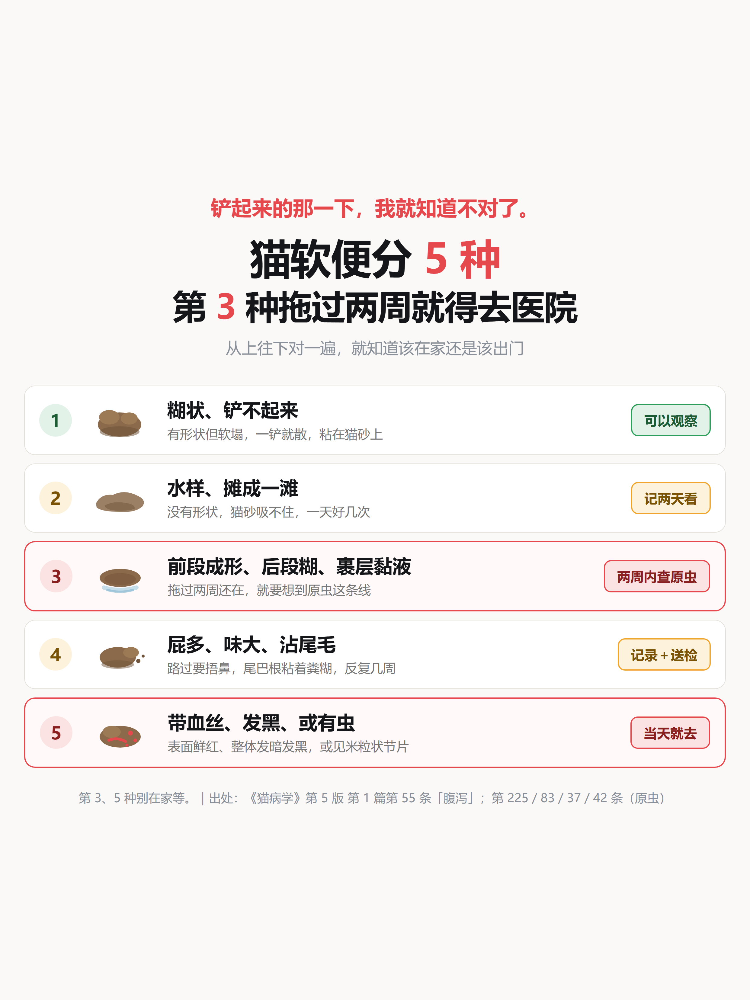
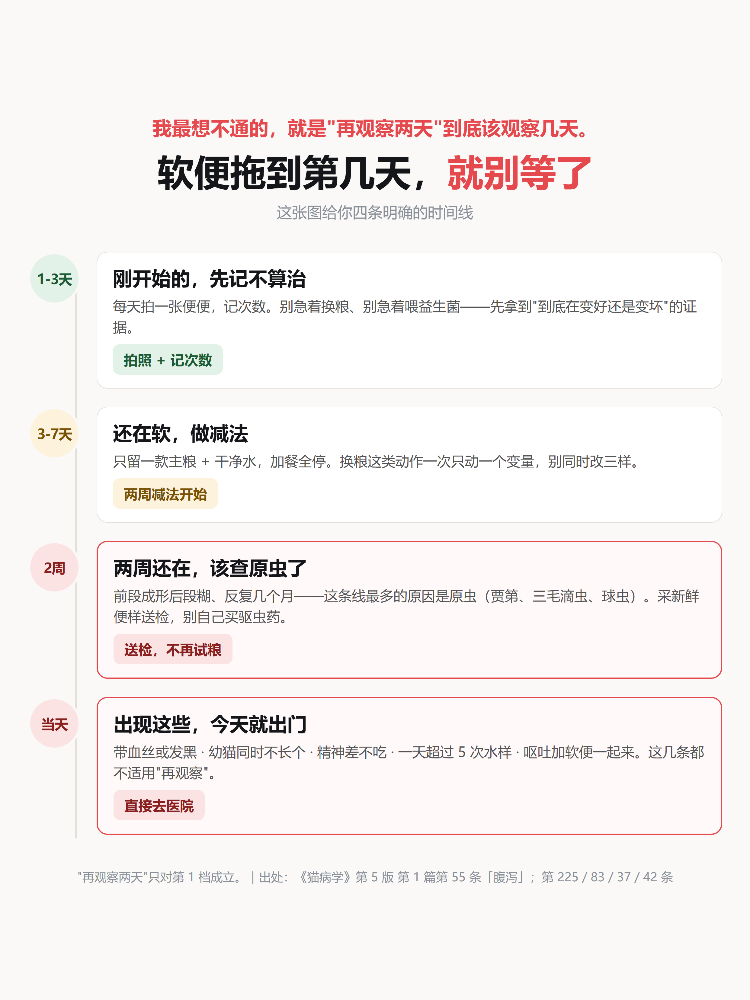
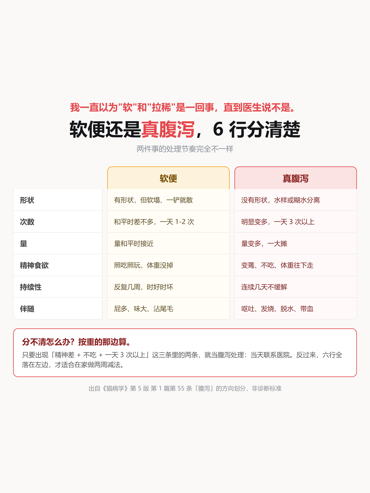
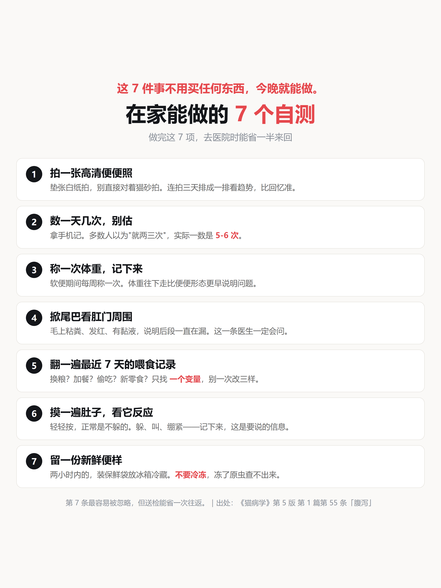
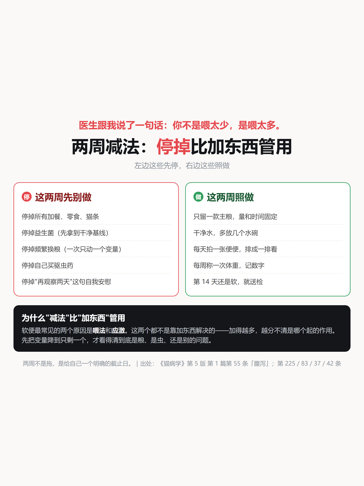
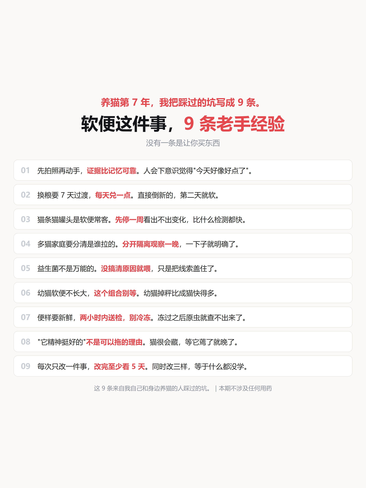

铲起来的那一下我就知道不对了。来是黏糊糊的，铲子一带就散。
我没当回事。第二天、第三天还是这样。网上搜了半天，都在说"再观察两天"。
后来我才明白，"再观察两天"这句话，只对第 1 种成立。
往下翻。第一张是 5 种形态，从上往下对一遍，就知道该在家还是该出门——第 3 种和第 5 种别等。第二张给了四条时间线，1-3 天、3-7 天、两周、当天，各自该干什么写清楚了。第三张是软便和真腹泻的 6 行对照，这两件事的处理节奏完全不一样。第四张是 7 个在家就能做的自测，不用买任何东西。第五张讲两周减法——停掉比加东西管用。最后 9 条，是我这几年踩过的坑。
第 3 种最容易被耽误：前段成形、后段糊、裹一层黏液，拖过两周还在。这条线最多的原因是原虫，不是粮。别再拿换粮当试验了，采一份新鲜便样送检，两小时内，不要冷冻。
症状不等于诊断，这里只帮你分方向，最终由兽医排查。本期不涉及任何用药。
一共 72 条，我一条条写。想看哪条，评论区点单；想看我怎么养这 7 只，关注我。
（本内容为 AI 辅助整理，资料出处已标注，请以兽医判断为准。）
"可乐"是我家小猫的名字。
| 指标 | 你的 4 篇 | 赛道实测 |
|---|---|---|
| 平均点赞 | 1.5 | 中位 37 |
| 最好一篇 | 6 赞 / 391 观看 | 榜首 6,499 赞 |
| Top10% 门槛 | — | 818 赞 |
| 收藏率（收藏/赞） | 最好 1.0（10-13 那篇） | 爆款普遍 >1.0，最高 1.23x |
| 平均标题长度 | 18-21 字（偏长） | 14 字（范围 8-23） |
| 原稿问题 | 本期改法 |
|---|---|
| 8 种便便形态分两张图（一期1、一期2） | 合并成 5 种一张对照表，首图就是工具表 |
| 标题「猫软便，先看便便长什么样」13 字，无数字无分级 | 「猫软便分5种，第3种拖过两周就得去医院」 |
| 一期 5 图 + 二期 6 图，节奏分散 | 单篇 6 图，一次讲完（赛道 Top20 无一拆期） |
| 缺时间刻度 | 新增 02-两周时间线（1-3天/3-7天/2周/当天） |
| 缺「减法具体做什么」 | 新增 05-两周减法（停什么/做什么） |
另外：标题你选第几个？定了我把图和文案一起定稿，再发到大号。